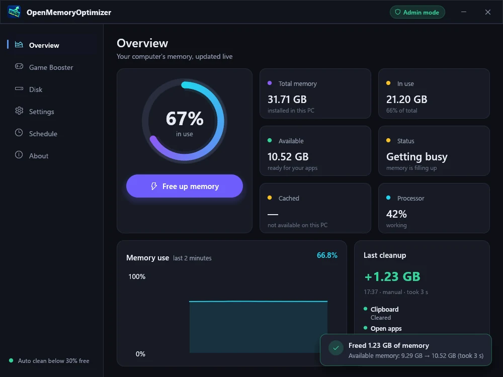

Fast and light
Built in Rust as a single native app. No runtime to install, starts instantly and barely uses your processor while it waits in the tray.
OpenMemoryOptimizer is a small, free memory optimizer for Windows. It is written in Rust and fully open source.
Free · No ads · No account

Built in Rust as a single native app. No runtime to install, starts instantly and barely uses your processor while it waits in the tray.
Rust prevents whole classes of memory bugs. The app has no ads and no tracking, and it never connects to the internet. It only uses the cleanup tools Windows already provides.
Every line of code is public under the GPL-3.0 license. Read it, build it yourself, or check each download against the published checksums.
Free for Windows 10 and 11 (64-bit).
Download OpenMemoryOptimizer-Setup-<version>.exe under Assets.
The app is not code-signed yet: if Windows says "Windows protected your PC",
click More info → Run anyway.